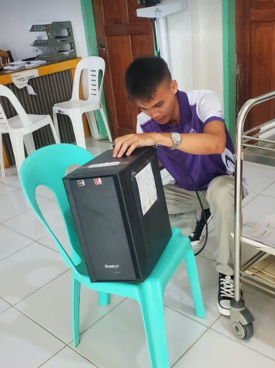
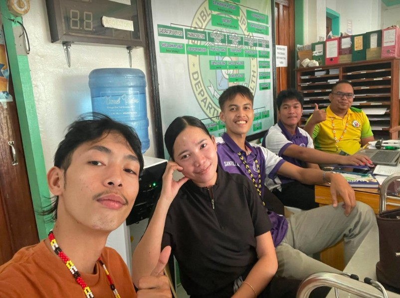
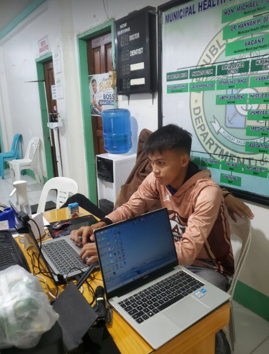

Liveness verification
Assisting with identity verification activities in the office.
Hi, I'm Aldrin B. Santillan — a Computer Science student documenting my journey of growth, technology, and community service at the Municipal Health Office of San Miguel.
THE INSTITUTIONS BEHIND MY JOURNEY
Turning classroom knowledge into meaningful, real-world experience.
My On-the-Job Training at the Municipal Health Office gave me the opportunity to support administrative and technical activities while observing how digital systems help deliver essential public services.
From office responsibilities to community health activities, this experience strengthened my professional skills and sense of responsibility.
My personal reflection ↗Highlights of the responsibilities and activities described in my OJT narrative.
Assisting with identity verification activities in the office.
Supporting PhilHealth record updates using iClinicSys-Doc.
Providing hands-on support for workplace equipment and technical tasks.
Taking part in field activities and health service initiatives.
Learning the value of teamwork and public service through community activities.
Developing adaptability, accountability, communication, and teamwork.
Four reflections on the work, lessons, and people that shaped my training. These are thematic posts, not dated weekly reports.
Selected photographs from my OJT narrative documentation.



Photos sourced from the narrative report. Please obtain permission before publicly posting recognizable colleagues and avoid patient information.
My OJT taught me that growth happens when knowledge meets responsibility and service.
Working with the Municipal Health Office helped me appreciate the role of technology in public service and strengthened my communication, teamwork, adaptability, and professional confidence.
With gratitude
To the Municipal Health Office personnel, my supervisor, NEMSU faculty, OJT coordinator, and fellow trainees — thank you for the guidance and support.